전체 14건
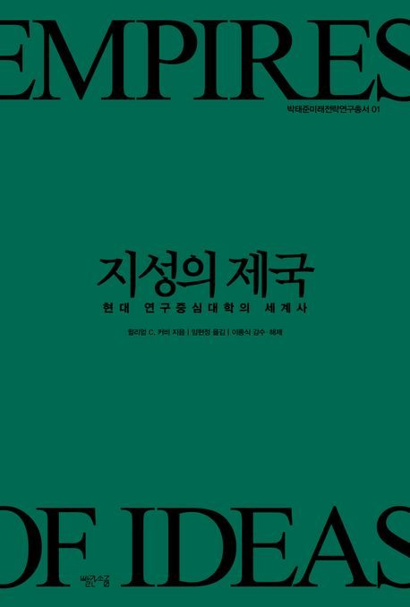
지성의 제국 (현대 연구중심대학의 세계사) - 미래전략연구총서 14
윌리엄 C. 커비 지음, 임현정 옮김 · 빨간소금 · 2026-02-25
훔볼트에서 칭화까지, 현대 연구중심대학의 탄생과 거대한 중심 이동대학은 지성주의의 보루여야만 한다오늘날 우리는 전 세계 어디에나 대학이 존�..

팬데믹과 한국 사회의 대전환 - 미래전략연구총서 13
포스텍 박태준미래전략연구소 엮음 · 비전코리아 · 2021-06-30
포스트코로나 시대 인간, 사회 그리고 세상에 대한 근원적인 질문을 던지다 전 세계를 강타한 코로나19 바이러스의 대유행으로 수억 명의 감염자와 수�..
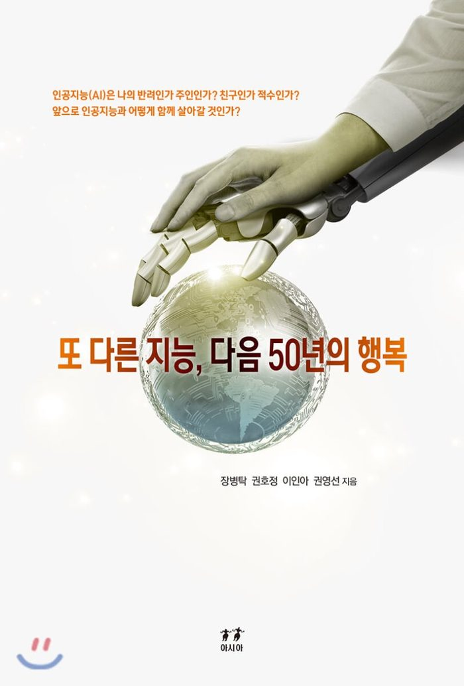
또 다른 지능, 다음 50년의 행복 - 미래전략연구총서 12
장병탁, 이인아, 권호정, 권영선 · 주식회사 아시아 · 2019-12-18
박태준미래전략연구총서 12권. 오늘날 중요한 화두로 떠오르고 있는 인공지능의 현재와 미래에 대한 전망을 각 분야 전문가들이 알기 쉽게 들려준다. �..

막힌사회와 그 비상구들 - 미래전략연구총서 11
강원택, 김왕배, 김원섭, 방민호, 배은경, 한준 · (주)아시아 · 2019-04-02
『막힌 사회와 그 비상구들』의 기획 의도는 열리고 또 열려서 아주 활짝 ‘열린 사회’인 오늘의 한국사회 내부의 곳곳에 가로놓인 ‘벽’에다 소통..
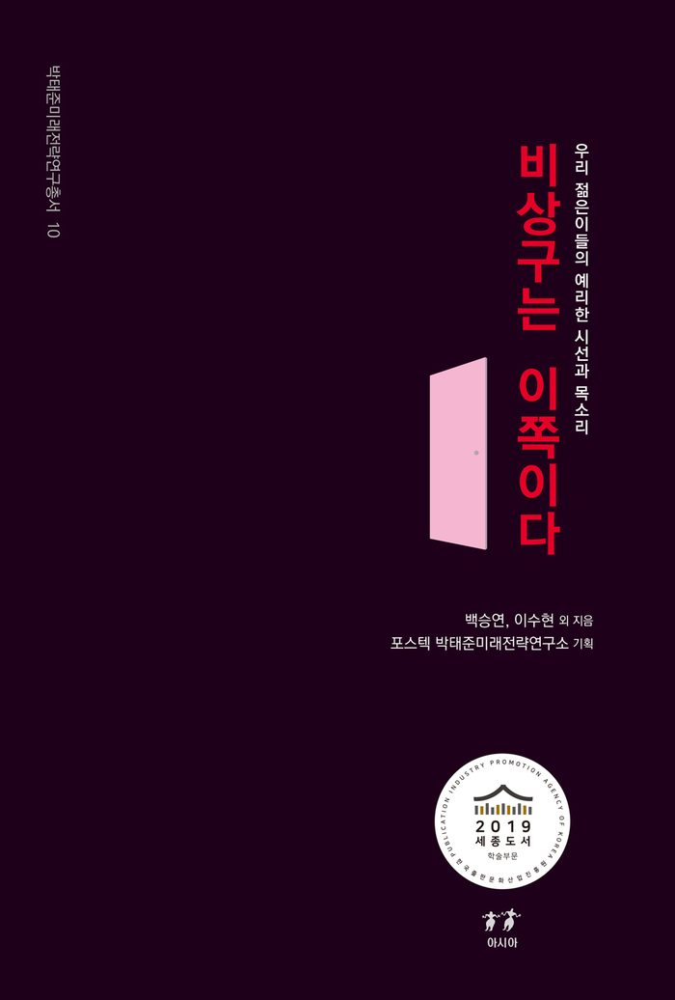
비상구는 이쪽이다 (우리 젊은이들의 예리한 시선과 목소리) - 미래전략연구총서 10
백승연, 이수현외 · (주)아시아 · 2018-11-28
박2019년 세종도서 학술부문 선정- 박태준미래전략연구소 미래전략연구총서 10권 [비상구는 이쪽이다 - 우리 젊은이들의 예리한 시선과 목소리]이 학술..
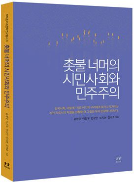
촛불 너머의 시민사회와 민주주의 - 미래전략연구총서 9
윤평중, 이진우, 전상인, 임지현, 김석호 · ㈜아시아 · 2018-01-18
‘촛불 너머의 시민사회와 민주주의’를 꿈꾸는 한국인의 필독 교양서 한국 시민사회와 민주주의는 어디쯤에 와 있는가? 그 민낯과 속살의 실상은..
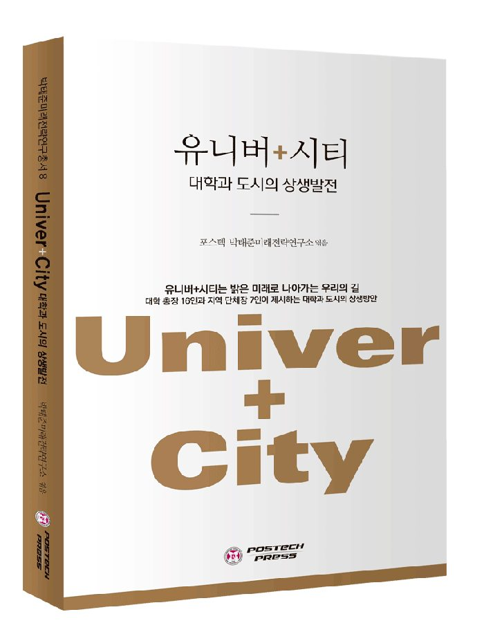
유니버+시티 - 대학과 도시의 상생발전 - 미래전략연구총서 8
포스텍 박태준미래전략연구소(엮음) · 포항공과대학교 출판부(POSTECH PRESS) · 2017-10-20
『유니버+시티-대학과 도시의 상생발전』은 대학과 도시의 상생발전에 뜻을 함께한 전국 여러 지역의 대학 총장 16인과 단체장 7인의 귀중한 제안과 �..
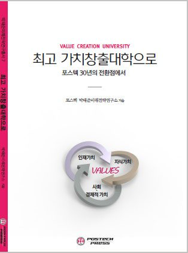
최고 가치창출대학으로 포스텍 30년의 전환점에서 - 미래전략연구총서 7
포스텍 박태준미래전략연구소 · 포스텍프레스(포항공과대학교출판부) · 2017-06-12
가치창출대학은 우리 대학들의 새로운 운명의 길 가치창출대학의 시대정신과 구체적 실현 방법론 제시 지식산업시대, 융합의 시대, 4차 산업혁�..
한국사회, 어디로? - 미래전략연구총서 6
김우창, 송복, 송호근, 장덕진 · (주)아시아 · 2017-02-24
2016년 포스텍 박태준미래전략연구소는 더 나은 한국사회를 위한 시대적 상황에 대응하기 위해 '한국인의 의식은 어떻게 바뀌어야 하나?' 로 주제를 선..
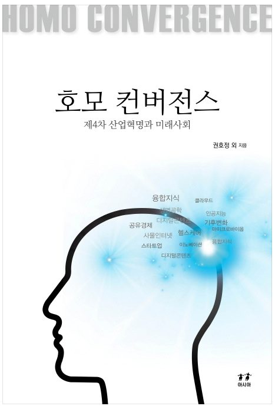
호모 컨버전스 ; 제4차 산업혁명과 미래사회 - 미래전략연구총서 5
권영선, 윤성민, 김민정, 이승주, 정병호, 윤길원, 권영선, 장병탁, 송기원, 양혁승외 · 아시아 · 2016-12-01
포스코청암재단 해외장학생회(POSCO CHUNGAM WORLD ACADEMY CLUB: PWAC)는 우리 사회를 위한 유익한 일을 모색하는 과정에서 회원들의 다양한 전문 지식과 경험�..
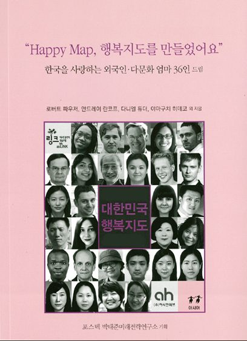
대한민국 행복지도 - 미래전략연구총서 4
저자 로버트 파우저외 36인 · 아시아 · 2016-10-31
박태준미래전략연구총서 4권. 케냐, 아프가니스탄, 러시아, 에스토니아, 우즈베키스탄, 루마니아, 스페인, 인도, 네덜란드, 베트남, 중국, 부탄, 미국, �..
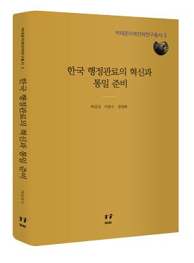
한국 행정관료의 혁신과 통일 준비 - 미래전략연구총서 3
박길성, 이종수, 정창화 · ㈜아시아 · 2016-02-25
<한국 행정관료의 전문성을 어떻게 제고하고 교육훈련을 어떻게 혁신할 것인가? 한국 행정관료의 충원과 고용방식을 어떻게 개선할 것인가? 한국 행정..
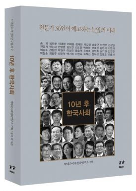
10년 후 한국사회 - 미래전략연구총서 2
송복 외 35명 · (주)아시아 · 2015-10-27
<< 박태준미래전략연구소 미래전략연구총서 2 '10년 후 한국사회'>>2차 세계대전의 종전과 함께 지구적 차원으로 굳어졌던 극단적 냉전체제 속에서 탄�..
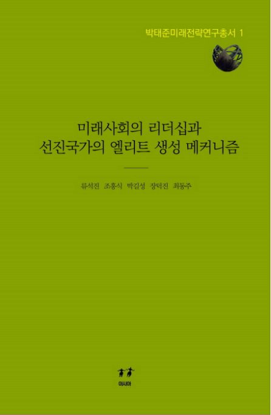
미래사회의 리더십과 선진국가의 엘리트 생성 메커니즘 - 미래전략연구총서 1
류석진, 조홍식, 박길성, 장덕진 · (주)아시아 · 2015-05-15
<< 박태준미래전략연구소 미래전략연구총서 1 '미래사회의 리더십과 선진국가의 엘리트 생성 메커니즘'>>『미래사회의 리더십과 선진국가의 엘리트 �..